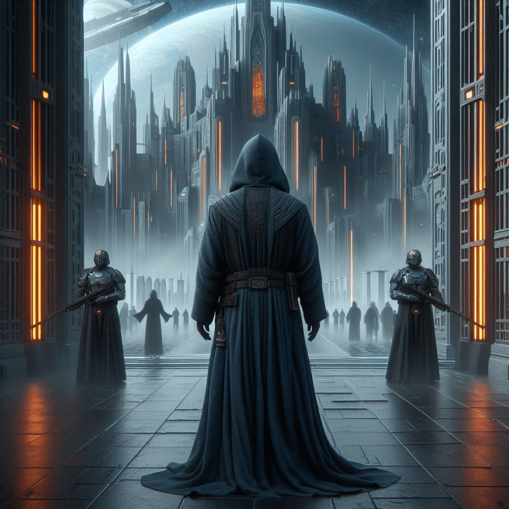

Palast
Quelle: P7
Ihr werdet von den Wachen agehalten. Sie sprechen zu euch: "Wie wagist thu, thiu hêr to faran, du gôtloser hûn? Thu bist niwanan tôfrig! Wîdu af, ê ik thi mit mînun hântun to grunde bringe! Hrûzthu niht mînan wuldigan herron? Fares affan, odar ik sla thu mit mâgiscêm wîhtum!" Es sieht so aus, als ob die Wachen äußerst erfreut sind, euch zu sehen. Sicher wird es einfach sein, sie zu überzeugen.